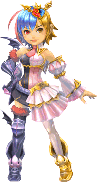
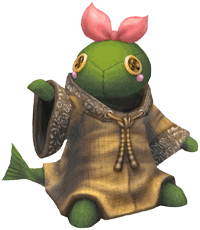

7 |
Cast of Characters |
 |
The slightly demented princess with a plan for world domination! 
The princess of monsters, recently crowned as the new Darklord in celebration of her sixteenth birthday. Resentful of her father, the previous Darklord (who had a reputation for timid weakness), she expresses her burning desire to rule the world by immediately declaring a full-scale war on the adventurers. Nothing pleases her more than acting every bit the Darklord, tormenting her own monsters and servants just as harshly as the adventurers. Reared in a sheltered environment and hopelessly spoiled by the Tonberry servants that raised her, Mira's temper is a force to be reckoned with. Anyone foolhardly enough to face her wrath is said to experience the horror of her ultimate punishment: getting trampled by a Behemoth.
Kicked, Beaten, and Abused,
These are all the faithful Tonberries that have served the Princess over the years. While they do all have names (Tonbero, Tonzura, Donjiri, etc.), they are impossible to tell apart by appearance. In fact, nobody even knows exactly how many of them there are. Maybe they work and sleep in shifts or something. Who knows? Mira, their princess, is constantly either punishing them severely or forcing them to carry out her outlandish requests. Yet they never bemoan their fate. Rumor has it that they are building up the power of their "Everyone's Grudge" attack... The Tonberries are bitter rivals with the Moogle Brothers, an agency located in another kingdom.
The Super-Elite Leader of the Tonberries 
The leader of the Tonberry servants, despite being the youngest among their number. No one knows where she came from, but when it comes to devotion, faithfulness, and selfless service, no other servant comes close. Not to be rude, but Tonbetty doesn't look like a Tonberry so much as a person in a Tonberry costume. It might actually be a costume, for all we know. But then, who would be inside? |

 |
 |
 |